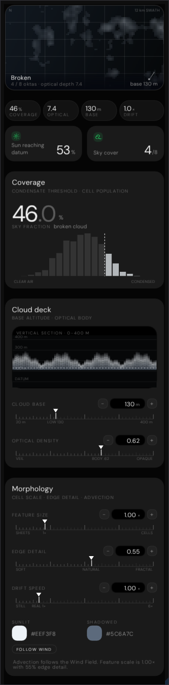
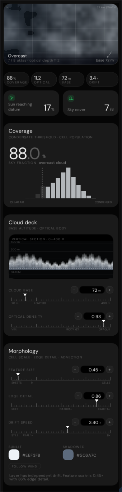
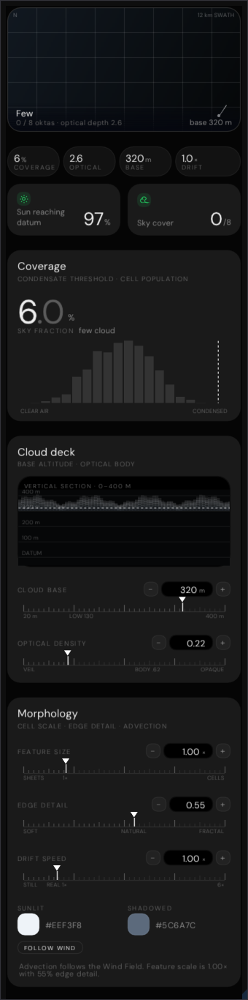
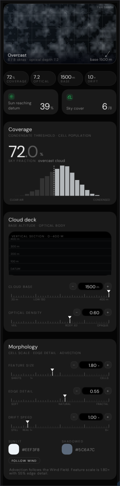

Every pixel below came out of a real ImGui draw list, rasterised on the CPU and written to PNG by
Exhibits/Workbench/Clouds/NativeCloudCards.cpp. Nothing here is a mock-up.
The shipped code is the depot kit embedded in the bundle at byte 4378455, mirrored on disk as
InspectorDepot/panels/clouds.js. InspectorHost.js mounts the depot
panels and overrides only the five light types with LightPanel.js, so clouds — like wind —
ship from the depot. The map, the histogram and the vertical section all read the same value-noise field,
frac(sin(x·127.1 + y·311.7)·43758.5453) smoothed bilinearly and summed over three octaves;
it is evaluated in double precision because the browser does, and single precision lands on different cells.
Swept to browser-sized type. ImGui bakes a face so that ascent minus
descent equals the requested size; CSS sizes the em box. For DM Sans the two differ by exactly 1.302, so
every run here used to be 23% narrower than Chrome draws it. WindInstrument::Grind now
applies the factor inside the text primitives, and the three collisions the correct type exposed are
fixed: .mp-stat is the two-column grid it always was, so a long label wraps in its own
column and both duo cards stretch to the taller one; .mp-chead .l is a flex column, so the
title and subtitle each take a full line box; and the notes wrap on the tracked advance instead of being
split by hand.
Verified against the bundle, not the sources.
Experimental/ProjectZeroEditor/index.html is the reference: a built, minified,
self-contained file in which the depot kit is an escaped JS string and Editor.css is
inlined. Reading the .js and .css beside it is not the same thing, so
Exhibits/Workbench/BundleParity.py now pulls the shipped code out of the bundle and
asserts that every literal and every numeric constant this port depends on is present there
— 199 checks across the cloud panel, the cloud deck and the fracture card.
Executed, not illustrated

.46 cover, .62 density, base 130 m. Satellite map, rail, duo, Coverage, Cloud deck and Morphology — six blocks in the reference's own order.

A dense low deck at 72 m with sheet-scale cells: the swath widens to 27 km, the sun reaching the datum falls to 17%, and FOLLOW WIND is cut loose.

A thin high layer at 320 m — nought oktas, and the histogram's condensed tail all but empties.

What CloudsInspectorPanel.cpp now feeds the cards:
a .72 cover, a 2.4× engine density normalised to .6 optical, and a 1500 m base. The base sits well
past the instrument's own 0–400 m window, which is why the section clips. The reference's
own answer to that range is CloudDeckPanel.jsx, now ported and mounted on the
engine's Cloud base card — see
CloudDeckNative.